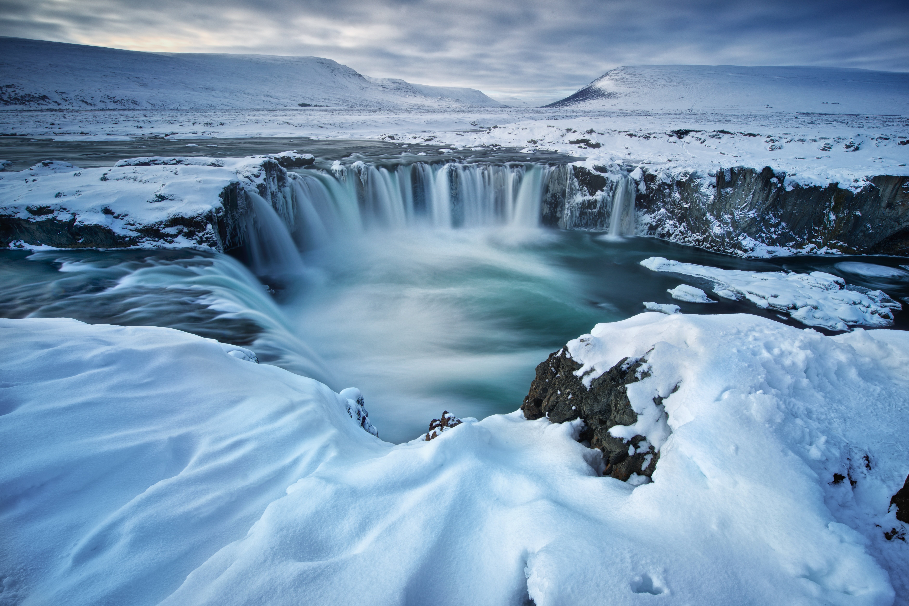

Greenland

Greenland is the world's largest non-continental island.
It's located in the Arctic (partially).
It's a territory within Denmark.
Capital city: Nuuk.
The majority of its residents are Inuit.
88% are Inuit; 12% are European descent.
Billingual: Greenlandic (official) and Danish.
Surprisingly, it has the highest suicide rate (2010).
They also have high rates of unemployment and alcoholism.
Tourism: sailing, dog sledding, and iceberg tours, etc.
Fishing is their largest income earner.
Cuisine: high protein, based on meat from marine life and birds.
It's located in the Arctic (partially).
It's a territory within Denmark.
Capital city: Nuuk.
The majority of its residents are Inuit.
88% are Inuit; 12% are European descent.
Billingual: Greenlandic (official) and Danish.
Surprisingly, it has the highest suicide rate (2010).
They also have high rates of unemployment and alcoholism.
Tourism: sailing, dog sledding, and iceberg tours, etc.
Fishing is their largest income earner.
Cuisine: high protein, based on meat from marine life and birds.
Icebergs and Glaciers

Greenland dogs

Greenland houses

Greenland people

Greenland cuisine: Suaasat
Credit: By distrita.com - https://www.thefooddictator.com/the-hirshon-greenland-sael-suaasat-meat-barley-soup/, CC BY-SA 4.0, Link
Greenland cuisine: Harp Seal
Credit: By Kim Hansen - Self-photographed, CC BY-SA 3.0, Link
Greenland cuisine: Halibut
Credit: By Matthieu Godbout - Own work, CC BY-SA 3.0, Link